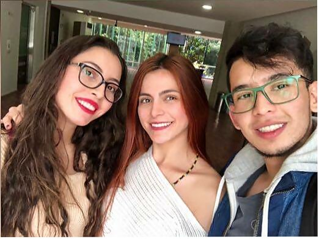

>>>>>>> proyecto_FINALDEFINITIVO/master

Equipo de Trabajo
Natalia Peñaranda Palacios
Bogotana. Estudiante de Ingeniería de Sistemas de quinto semestre en la Universidad EAN, graduación proyectada para el año 2020. Espero realizar una especialización en ciencias de computación o en el desarrollo en sistemas de información, donde se aplique la ingeniería para el aporte, avance y bienestar en las sociedades.Tengo aptitudes en lógica algorítmica, arquitectura de sistemas, programación en Python y Kotlin y especial interés en la investigación científica. He participado en eventos de ingeniería y tecnología tales como: EIEI, FCEI 2017-2018, Microsoft Cloud First Camp, GSF 2018, Colciencias. Mis áreas de interés son: IA, Machine learning, Deep learning, Desarrollo de Sistemas de Información, Realidad AR, VR, MR.
Daniela Pinzón Bustamante
Bogotana. Estudiante de Ingeniería de Sistemas de quinto semestre en la Universidad EAN, graduación proyectada para el año 2020. Espero realizar una maestría en seguridad y tecnologías de la información, donde aplique la ingeniería para impedir ciberdelitos e incidentes informáticos. Tengo aptitudes en pensamiento convergente y divergente, lógica algorítmica, sistemas operativos, programación en Python y Java. He participado en eventos de ingeniería y tecnología tales como: EIEI, FCEI 2017-2018, Microsoft Cloud First Camp, Colciencias. Mis áreas de interés son: Seguridad informática, robótica, auditoría informática, informática forense y autopista digital.
Santiago Peréz Sanabria
Bogotano.Estudiante de Ingeniería de Sistemas de quinto semestre en la Universidad EAN, graduación proyectada para el año 2020. Espero realizar una maestria en gerencia de proyectos y en áreas relacionadas con la seguridad informática y/o inteligencia artificial dado que es un tema en auge actualmente que puede generar multiples beneficios a la sociedad así como generar avances tecnológicos que permitan mejorar la calidad de vida de la gente. He programado en lenguajes como Python, Kotlin, JAVA, además de poseer conocimientos básicos de HTML5 y PHP. Mis áreas de interés son: Robótica, Seguridad informática, gerencia de proyectos, Tecnologías relacionadas con el avance científico en el ámbito de la astonomía y la ingeniería de la música.